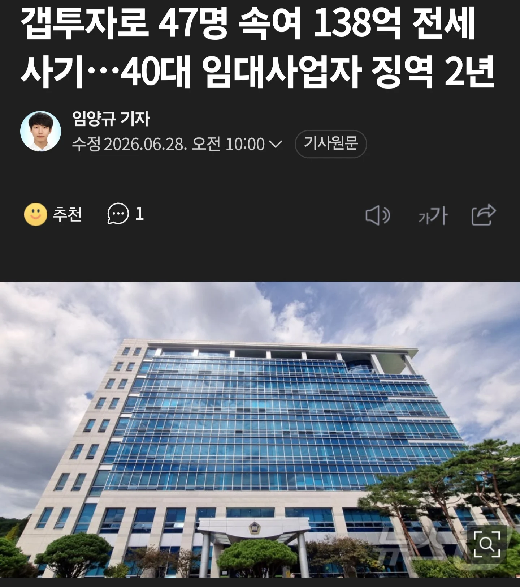
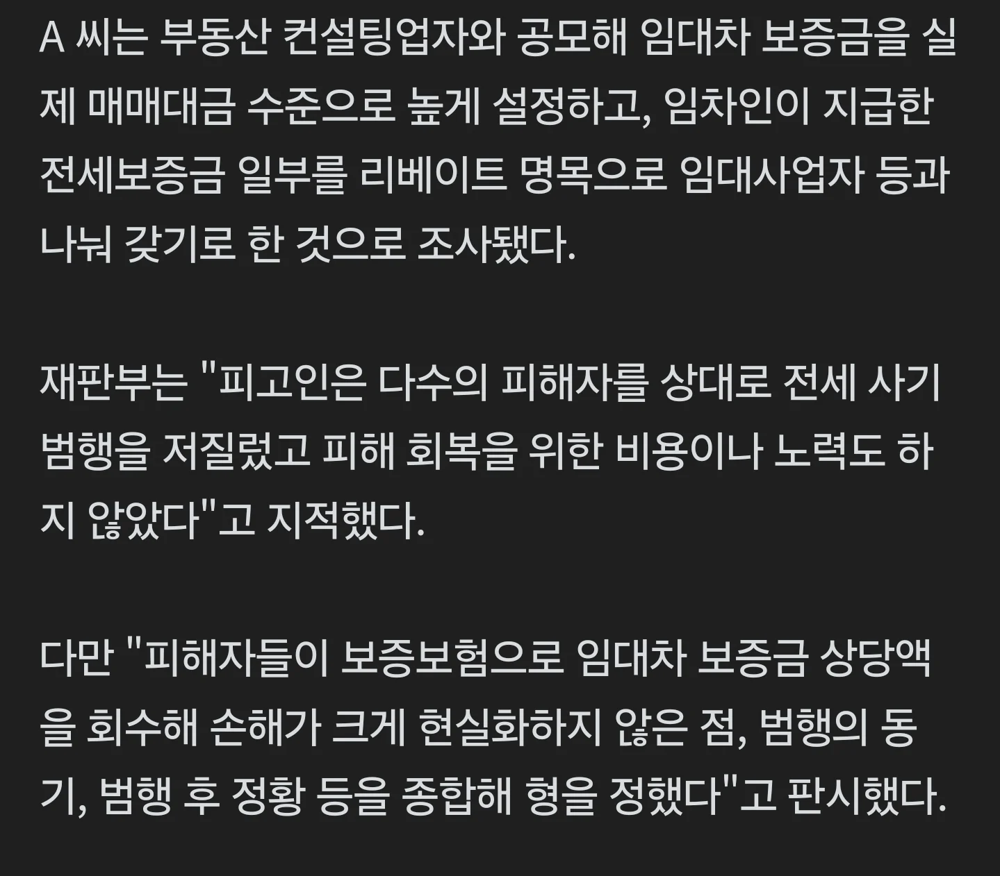

https://n.news.naver.com/article/421/0009027418?sid=102


보증보험으로 나라가 대신 갚아줘서 형이 낮아진거같음
https://n.news.naver.com/article/421/0009027418?sid=102


보증보험으로 나라가 대신 갚아줘서 형이 낮아진거같음
캬~
꺼억
애초에 양형 기준이 낮음
2년 살고 나와도 아직 130억대 건물은 그대로 있는거지?ㅋㅋㅋ
민사로 다 뜯길거임
그걸 자기 이름으로 가지고 있다면 말이지
건물이 게임 아이템도 아니고
전세보증보험이 전세보증금 대신 내줬으면 구상권 행사해서 다 털어가지
보증보험의 민사가 남아있습나...
죽을때까지 자기명의로 아무것도안해야지뭐
자기명의로 그대로 갖고있지는 않겠지
걍 교도소 출소하는날 피해자들 단체로가서 칼찌하는게 맞다. 더이상 나라가 자정작용이 안되네.
47명이 썰어서 나눠가져서 분쇄기에 갈아버리면 딱이네
어? 그거 금자씨??
1년에 1원씩 모으면
딱 빅뱅 시작하고부터 지금까지 걸려야 모으는 돈이네 ㅋㅋㅋ
보증보험으로 손해 메꾼거랑 즈그 사기친거랑 대체 무슨상관이야 씨발ㅋㅋㅋㅋ
민사 존나 쳐맞겠네 ㅋㅋ
교화도 안돼 돈 뺏어서 피해자들한테 돌려주는거도 아냐 뭐 왜 있는거야? 내가 생각이 짧은건지 나라가 이상한건지
빚은 나라가 갚았는데 왜 혜택은 피의자가 봄?
저러면 민사를 나라에서 거는거임? 피해자들한텐 보증보험 금액이 나갈거고
"원칙적"으론 보증보험에서 민사건다고 함
근데 저새끼가 5억밖에 없어 배째 이러면 5억 뜯어가고 나머지 금액은 채권으로 만든다고 하네
진짜 사기꾼이 살기 좋은 나라야...
진짜 전세 사기 형량을 늘려야 되는데 전세를 없애고 있으니.... 앞으로 집 있는 사람 없는 사람 격차는 계속 벌어질듯...
캬 상승장엔 사기쳐서 100배 200배 레버리지로 수십억 자산가되고 하락장맞으면 몰루~ 나라가 다갚아줘~
이게 로또지 ㅋㅋ
걱정 ㄴㄴ 저 놈의 재산이 남아있다면 보증보험에서 탈탈털어서 추심할거고.
그 사이에 증여한것도 전부 추심대상이긴 함.
증여받은 놈이 다 써버렸다 하면 답없긴한데
전세사기 하기 좋은 나라
???: 내가 언제 사라져야한다고 했습니까?
진짜 읽자마자 현웃터짐....
웃는거 말고 할수있는게 없다
근데 진짜 ㅈ같은게 저러고 돈 어디 숨겨두고 땅속이나 이런데 숨겨두고 죽을때까지 가족통장쓰면 편안하게살다가는게 ㅈ같음 연좌제가 특정법에따라 있어야한다고봄 사기꾼이 사기쳐서 현금이나 돈세탁 으로 가족명의로 돌려서 그걸로잘먹고잘살면 피해자들은 얼마나 ㅈ같겠냐
징역 들가기전에 명의 싹 돌리고 들어갔다 나오면 민사로 못조지겠네 ㅋㅋ
부동산 왕창 사기치고 어떤 한사람 범인 만든 후 죽여버림. 피해자들은 돌려받을 방법이 없음. 사기조직의 완전범죄.
역시 해쳐먹을거면 크게 해쳐먹어야된다노
판싸개들이 알아서 허벌창 보지같은 판결 박아주노